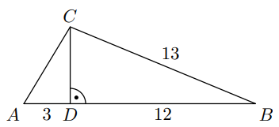

W trójkącie ABC bok BC ma długość 13, a wysokość CD tego trójkąta dzieli bok AB
na odcinki o długościach \(|AD|=3\) i \(|BD|=12\) (zobacz rysunek obok).
Długość boku AC jest równa:

Wysokość \(CD\) dzieli trójkąt na dwa prostokątne: \(\triangle ACD\) i \(\triangle BCD\).
W \(\triangle ACD\): \(AC^2 = AD^2 + CD^2 = 3^2 + CD^2\).
W \(\triangle BCD\): \(BC^2 = BD^2 + CD^2 = 12^2 + CD^2\).
Ponieważ \(BC=13\), mamy \(13^2 = 12^2 + CD^2 \Rightarrow CD^2=25 \Rightarrow CD=5\).
Wtedy \(AC^2 = 9+25=34 \Rightarrow AC=\sqrt{34}\).
Odp.: A.
Zad. 2
(listopad 2010 - zad. 17)
Ogród ma kształt prostokąta o bokach długości 20m i 40m. Na dwóch końcach przekątnej wbito słupki.
Odległość między słupkami jest:
Przekątna prostokąta: \(\sqrt{20^2+40^2} = \sqrt{400+1600} = \sqrt{2000} \approx 44,72\).
Leży między 40 a 45.
Odp.: C.
Zad. 3
(sierpień 2010 - zad. 18)
Przekątna AC prostokąta ABCD ma długość 11, a bok AB jest od niej o 5 krótszy. Oblicz długość boku AD.
Bok \(AB = 11-5=6\).
Z Pitagorasa: \(AD^2 = AC^2 - AB^2 = 11^2 - 6^2 = 121-36=85\).
\(AD = \sqrt{85}\).
Odp.: B.
Zad. 4
(maj 2010 - zad. 16)
Podstawa trójkąta równoramiennego ma długość 6, a ramię ma długość 5. Wysokość opuszczona na podstawę ma długość:
Połowa podstawy: \(6:2=3\).
Z Pitagorasa: \(h^2 = 5^2 - 3^2 = 25-9=16 \Rightarrow h=4\).
Odp.: B.
Zad. 5
(listopad 2009 - zad. 17)
W trójkącie równoramiennym ABC dane są \(|AC|=|BC|=7\) oraz \(|AB|=12\).
Wysokość opuszczona z wierzchołka C jest równa:
Podstawa \(AB=12\). Połowa to 6.
Wysokość: \(h^2 = 7^2 - 6^2 = 49-36=13\).
\(h = \sqrt{13}\).
Odp.: A.